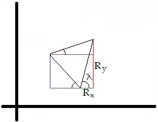

Two Dimensional Motion
In this lesson we'll be learning more about the kinematic formulas and how to derive them, how to add subtract vectors to find a resulting vector, projectile motion problems, and relative velocity.
Deriving the Kinematic formulas
- v=v0+at
- ∆S=½(v+v0)t
- ∆S=v0+½at2
- ∆S=v-½at2
- v2=v02+2a∆S
In this section I will be deriving some of the Kinematic formulas given above. These equations are derived when acceleration is constant. Acceleration is the rate of change of velocity, this means acceleration is the slope of the function v(t) and since acceleration is constant the function would be linear.
The image above shows a graph of Velocity by Time, Velocity is the vertical axis, time is the horizontal axis, initial velocity is the Velocity intercept, and the slope is acceleration. The equation for a line is y=mx+b where y is the vertical axis, m is the slope, x is the horizontal axis, and be is the y-intercept. Simply substituting the variables with the variables from our graph gives us v=v0+at Which is the first kinematic formula.
Vector addition
When adding two vectors together they are placed tip to tail and their addition sums to a resultant vector where the beginning of the vector starts at the start of the first vector and ends at the end of the second vector.
Finding the value of the resultant is as simple as adding the vertical and horizontal components of the vectors.
Using trigonmetry we know that sine = opposite/hypotenuse and cosine = adjacent/hypotenuse. This will be very important
for figuring out the vertical and horizontal component as the vertical component is the magnitude of the vector
multiplied by the sine of theta. Where theta equals the angle between the vector and the horizontal. The horizontal
component is the magnitude of the vector multiplied by the cosine of theta. Where theta is the angle between the vector
and the horizontal. Vy=Vsin(ϴ) and Vx=Vcos(ϴ) respectively.
The image below shows the vector A and b broken into components.
| Vector A | Vector B | Resultant | |
|---|---|---|---|
| x component | Acosϴ | Bcosϕ | Acosϴ+Bcosϕ |
| y component | Asinϴ | Bsinϕ | Asinϴ+Bsinϕ |
In this example, the y-components are both positive and add together. But the x-components are pointing in opposite directions, in order to determine the magnitude of the resultant's x-component, Vector A's x-component will be negative. This is demonstrated in the image below.

To find the magnitude of the Resultant vector we simply have to apply the pathagorean theorem. a2+b2=c2
Rx2+Ry2 = R2
R = √(Rx2+Ry2)
To find the angle from the horizontal, λ, we can use some trigonometry. We have the x and y components.
Tangent = Opposite/Adjacent, tan = y/x, therefor λ = arctan(Ry/Rx)
Projectile Motion
Projectile motion problems refer to a type of problem where an object has been launched into the air, usually at an angle. Using our knowledge of the Kinematic formulas and adding vectors, we can solve these problems.
A ball is kicked with a velocity of 18m/s at an angle of 38 degrees from the horizontal how many seconds pass
before the ball lands on the ground? (ignore air resistance)
As always, I like to draw a picture first.
Finding the time of the projectile with just the velocity and the acceleration from gravity can be done
by using the kinematic formula v=v0+at and the y-component of the initial velocity. Since
we are ignoring friction we know the acceleration of the object is only the force of gravity and that
means the object will accelerate while moving downward at the same rate it decelerated while it was
moving upward. Since the object will travel the same distance both upwards and downwards, the final
velocity will be the opposite of the initial velocity.
-18sin(38)m/s = 18sin(38)m/s - 9.8m/s2t
(-36sin(38)m/s)/(-9.8m/s2) = t
t = 2.26s
Comprehension Question
A ball is kicked with a velocity of 18m/s at an angle of 38 degrees from the horizontal how many meters does it travel
before it hits the ground? (ignore air resistance)